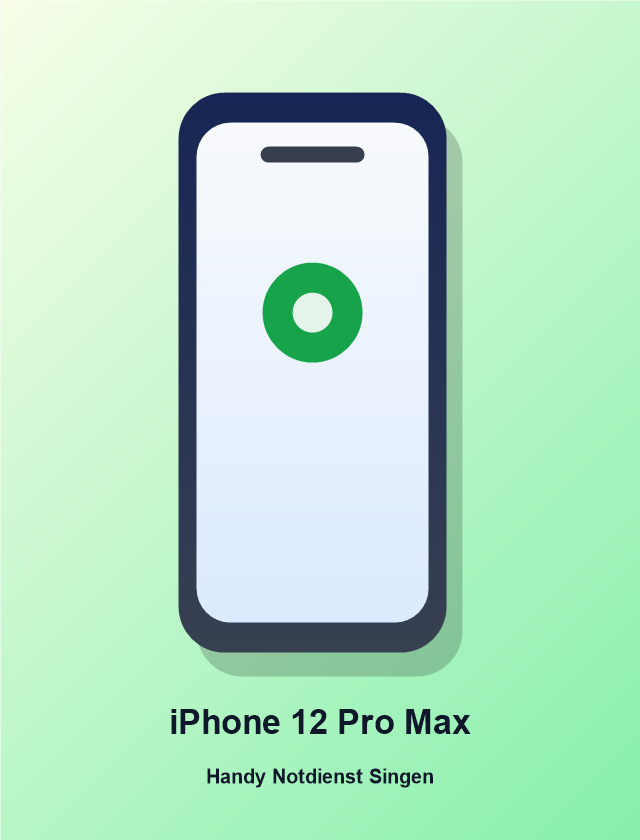

Was kostet die Reparatur?
Wähle dein Gerät und sieh dir die voraussichtlichen Preise für gängige Reparaturen an.
Preise sofort prüfen
Daten bleiben erhalten
Gerät auswählen

Ausgewähltes Gerät
iPhone 12 Pro Max
Verfügbare Reparaturen
voraussichtlichErsatzteil-Verfügbarkeit wird beim WhatsApp-Check bestätigt.
Per WhatsApp anfragenDie endgültigen Kosten und Garantie hängen vom Zustand des Geräts und der gewählten Ersatzteilqualität ab. Original/Premium und günstige Varianten klären wir vorab.